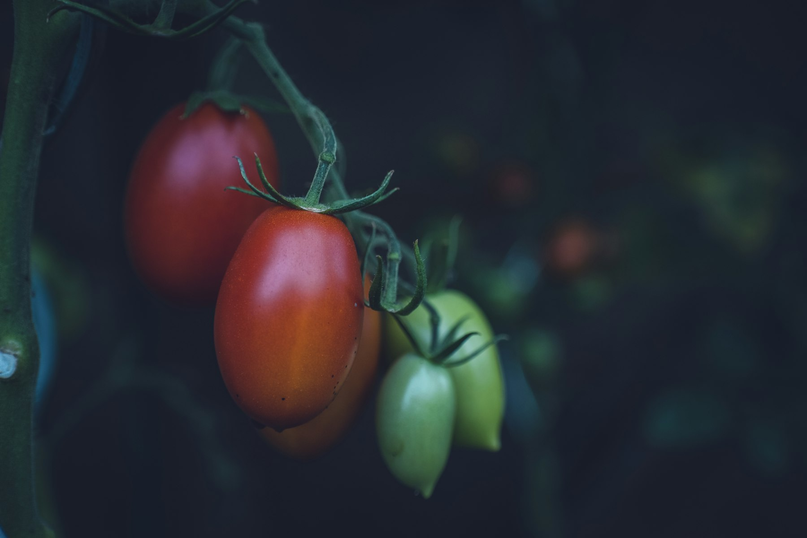
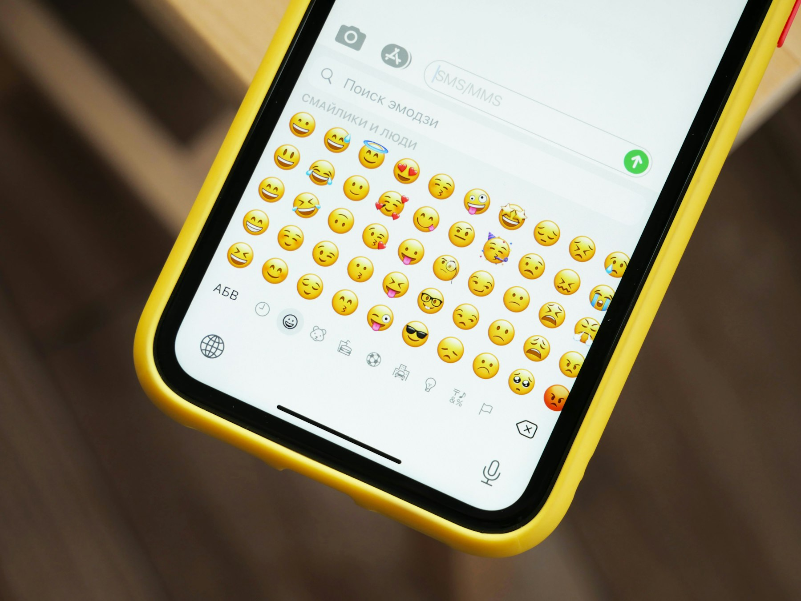

TL;DR
Pomodoro apps enhance productivity by breaking work into focused intervals. Popular apps like Forest and Focus Booster offer unique features and tracking. Choose the one that fits your style.

Understanding the Pomodoro Technique
The Pomodoro Technique is a popular time management method developed by Francesco Cirillo. It encourages breaking work into intervals, traditionally 25 minutes long, separated by short breaks. These intervals are known as 'Pomodoros.' After completing four Pomodoros, a longer break is taken. This technique helps you maintain focus and avoid burnout. By structuring your work in manageable chunks, you can increase motivation and productivity. Many people find it easier to concentrate on a task when they know there is a break coming up. With the right Pomodoro app, you can optimize this technique further. The apps track your Pomodoros, remind you when to take breaks, and even provide analytics to help you refine your work habits.
Top Pomodoro Apps
1. **Focus Booster**: This app offers a very user-friendly interface. You can customize your Pomodoro lengths and track your sessions. Focus Booster also provides reports to analyze your productivity over time. 2. **TomatoTimer**: A simple web-based tool that runs in your browser. You can start your Pomodoro without any downloads. It has a minimalist design, which helps avoid distractions. 3. **Forest**: This unique app combines the Pomodoro technique with gamification. By staying focused, you can grow a virtual tree. If you exit the app, your tree dies, motivating you to remain on task. 4. **Focus@Will**: While primarily a music app, it integrates the Pomodoro technique to enhance focus. It offers different playlists that cater to various types of work. You can listen while timing your Pomodoros.
Features to Look For
When choosing a Pomodoro app, consider the following features: - **Customization**: The ability to adjust Pomodoro lengths and break times allows for flexibility. Different tasks may require different timings. - **Analytics**: Detailed reports can help you track your productivity and improve over time. Look for apps that offer this feature to visualize your progress. - **User Experience**: The interface should be simple and intuitive. Cluttered or complicated interfaces can detract from your focus. - **Integration**: Some apps can integrate with other productivity tools you already use, enhancing your workflow.
How to Incorporate a Pomodoro App into Your Routine
Start by selecting a project or a task you want to focus on for the day. Open your chosen Pomodoro app. Set your task in the app if it has that feature. Then, customize your Pomodoro timer based on preferences. Begin working on your task. When the timer goes off, take a short break, ideally 5 minutes. Use this time to stretch or grab a drink. After four Pomodoros, take a longer break of 15-30 minutes. Plan this to recharge and refresh your mind. Repeat the process. Over time, you'll find that you can complete tasks more efficiently while maintaining high concentration levels.

Review of Popular Apps
Let's take a closer look at some popular Pomodoro apps: - **Focus Booster**: This app scored high in usability and analytics. Users appreciate its simplicity and effective tracking features. - **Forest**: Many users love the gamification aspect of Forest. The unique approach to focus makes it engaging, especially for those who enjoy gaming elements in productivity tools. - **TomatoTimer**: Users praise its straightforward design. There's no steep learning curve, making it suitable for anyone new to the Pomodoro Technique. - **Focus@Will**: Perfect for those who work better with background music. Its integration of music enhances concentration while keeping time.
FAQ
What is the Pomodoro Technique?
The Pomodoro Technique is a time management method using 25-minute work intervals followed by short breaks.
Can I use these apps on multiple devices?
Most Pomodoro apps have cross-device functionality, allowing you to sync your progress on phones, tablets, and desktops.
Are Pomodoro apps free?
Many Pomodoro apps offer free versions with basic features, while premium versions may come with additional tools and analytics.
How can I customize my Pomodoro sessions?
Most apps allow you to adjust the duration of your Pomodoros and breaks according to your personal preference.
Photo credits
- Photo 1: Markus Spiske on Unsplash (https://unsplash.com/@markusspiske) (https://unsplash.com/photos/selective-focus-photography-of-red-and-green-fruits-ks_nwPcGdl8)
- Photo 2: Breakslow on Unsplash (https://unsplash.com/@breakslow) (https://unsplash.com/photos/man-sitting-in-front-of-table-with-breakfast-served-iGEivm-lkdQ)
- Photo 3: Brian McGowan on Unsplash (https://unsplash.com/@sushioutlaw) (https://unsplash.com/photos/black-android-smartphone-on-white-table-YDDnFThf48g)
- Photo 4: Glenn Carstens-Peters on Unsplash (https://unsplash.com/@glenncarstenspeters) (https://unsplash.com/photos/person-using-macbook-pro-npxXWgQ33ZQ)
- Photo 5: Denis Cherkashin on Unsplash (https://unsplash.com/@denic) (https://unsplash.com/photos/black-and-yellow-smartphone-case-qIKSsOMIhpM)